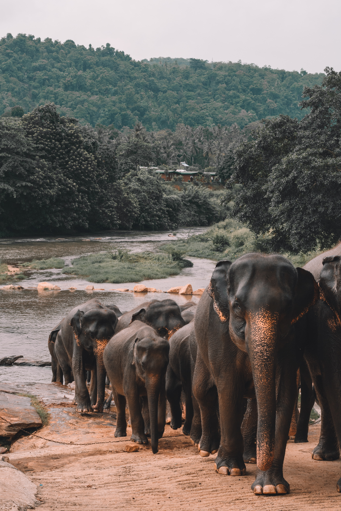

Ampara is the main town of Ampara District, governed by an Urban Council. It is located in the Eastern Province, Sri Lanka, about 360 km from the capital city of Colombo. Most of the civilians in the town are Sinhala. In 2001, there were 20,152 people in the town limit and 96% of them were Sinhalese. Buddhism was the predominant religion, practiced by 93%.
Kumana National Park

Kumana National Park spreads over an area of 35,664 hectares. In the west, the park is bordered by River Kumubukkan Oya; to the south is south-eastern coast that runs to Panama. A 200 hectares mangrove swamp called “Kumana Villu” within the Park is subject to occasional inundation with sea water. It is at this swamp that many water birds nest, during the months of May and June. Scattered in the Kumana National Park are several water pools that are favorite spots of the wildlife: Kudawila wewa, Thummulla wewa and Kotalinda wewa.
Gal Oya National Park
Gal Oya National Park in Sri Lanka was established in 1954 and serves as the main catchment area for Senanayake Samudraya, the largest reservoir in Sri Lanka. Senanayake Samudraya was built under the Gal Oya development project by damming the Gal Oya at Inginiyagala in 1950. An important feature of the Gal Oya National Park is its elephant herd that can be seen throughout the year. Gal Oya National Park can be reached from Colombo via Ratnapura, Pelmadulla, Udawalawe, Thanamalwila, Wellawaya, Moneragala and then north from Siyambalanduwa to Inginiyagala. The park entrance is 20 km west from Ampara at Inginiyagala. Inginiyagala affords the tourists the opportunity of a boat trip around the great Senanayake Samudra reservoir. Ampara can be reached by domestic flight too.
Buddhangala Temple
One of the most breath taking places in Sri Lanka.The Buddhangala Monastery lies deep in the jungles about 7 kilometers off Ampara. The monastic hermitage, with five rocks , each a part, allowing water pools to run around that makes natural beauty of scenic surroundings.The Monastery covers 1280 acres covering 5 rocks where the remains of the ancient monastery can be seen.This area belonged to the Digamadulla Kingdom which was started by Prince Dighayu in the 4th century BC. All though the beginning of this monastery is not documented, Ven Ellawala Medhananda Thero states that the history of is monastery is as old as the Digamadulla Kingdom.
Deegavapi Stupa
This is a definite must see is a definite must see as it is said that Buddha visited this exact spot. The temple is being redone by the archaeology department. Very easy and safe to travel from the main road.This is believed to be the first ever temple (stupa) built in Sri Lanka. So this is must visit place. Kind of hide from tourists, but go there, you will amazed. There is another temple nearby "Deegavapi Parivara Stupa", which is a part of this. Nice place, go and worship.
Lahugala Kithulana National Park
LahugalaKithulana national park is one of the most cherished habitats of elephants and endemic birds, though it is categorized as one of the smallest national parks in Sri Lanka. The park stretches over 1554 hectares in the basin of Hedaoya(river), 16 km inland from the coastal city of Pothuvil in the Eastern province. It was initially declared a sanctuary in 1966 and then promoted to a national park in 1980.There are three tanks found in this park, namely Lahugala, Kitulana and Sengamuwa which eventually unite in Hedaoya. The land here is flat with occasional rocky outcrops. Since the park lies in the dry zone of the island, it receives rain mainly from north east monsoon during the months November to December and its vegetation represents dry mixed evergreen forests. The grass species called Beru(Sacciolepisinterrupta) dominates the land, being a main food source for elephants.
Crocodile Rock
Just a couple hundred metres south from the ever-famous Arugam Bay lies the slightly more elusive Crocodile Rock. While its world-famous neighbour is better known for being an amazing surf spot, Crocodile Rock, too, serves as a great surf escape!.Arugam Bay, the popular beach holiday and surfing destination on the east coast of Sri Lanka (About Sri Lanka, Ceylon) was a hot topic around the world due to a crocodile attack, in which a British journalist was killed. Paul McClean, who worked at financial times of London, was grabbed by a crocodile near the crocodile rock of Arugam Bay. The body was discovered later and it was identified by the fellow travellers, who travelled with him. McClean was holidaying in the island at the time of the attack. He had gone to the forested area away from the beach and he was targeted by a crocodile. Several tourists who were in the area of profile rock had seen the incident but they were not in a position to help the victim.